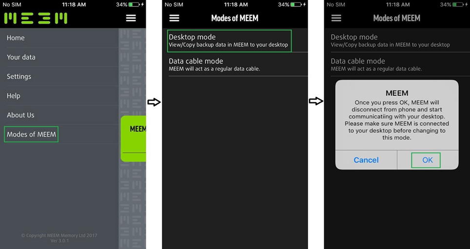

MEEM DATA CABLE MODE
The MEEM cable can now also act as a simple charging and sync cable in the event you want to transfer files directly from your device to your computer. This means you have the benefit of both a normal sync cable and backup cable in one.
To use the Data Cable Mode, connect the MEEM cable to both your computer and mobile device. Here your computer is acting as the power source. After connecting the cable you’re your mobile device, the MEEM app will launch automatically as normal. After opening you can set the MEEM cable to act in Data Cable Mode by going into the MEEM Menu > Modes of MEEM and selecting Data Cable Mode (as shown below).

The MEEM cable is now in Data Cable Mode and will act as a normal sync and charging cable. This enables the user to transfer data from their phone to their computer and can be used with programs like iTunes for syncing their iPhone with their computer.
To go back to the normal MEEM mode simply disconnect the cable from the power source and connect it back.